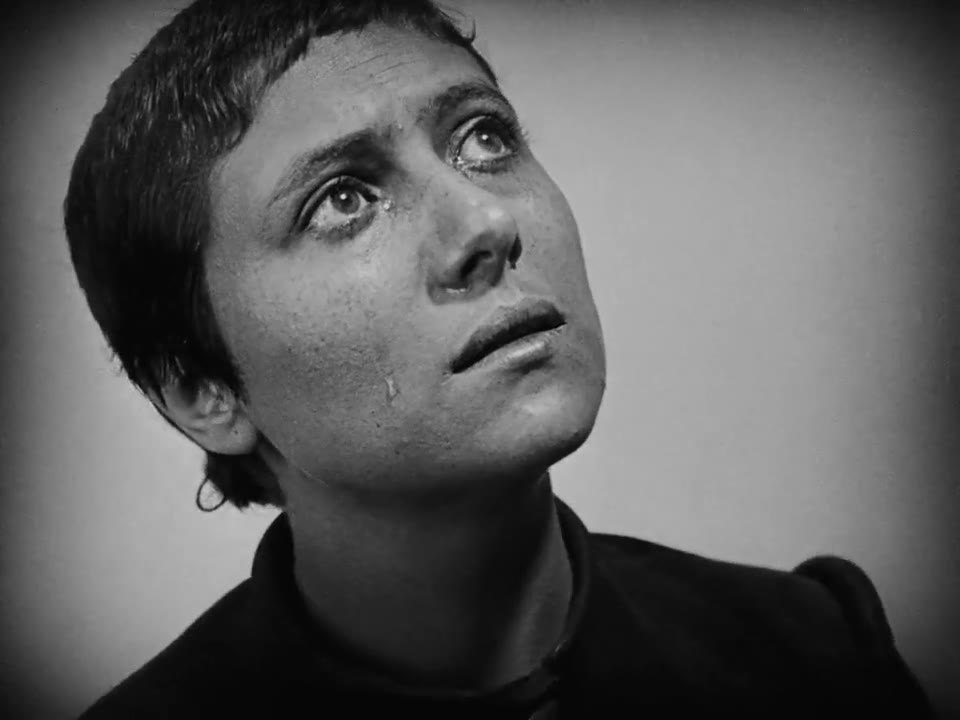

The Passion of Joan of Arc, frame at 22:27
Carl Theodor Dreyer · 1928 · Silent film, black and white (frame)
Free to use
With a budget of seven million francs, Dreyer had a single octagonal concrete set built to stand for Rouen Castle, and painted it pink so it would read as grey on black-and-white film. He shot the scenes in story order, from first to last. The film was banned in Britain, and the Archbishop of Paris demanded changes. A print of Dreyer's own cut was found in 1981 at Dikemark Hospital, a mental institution outside Oslo.